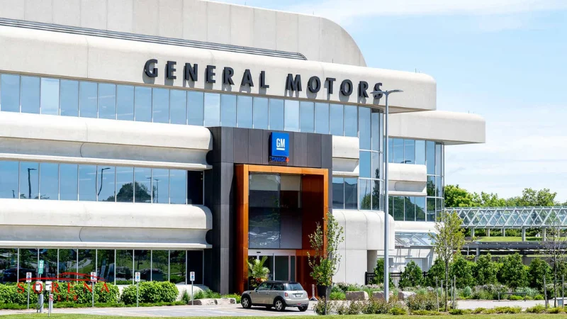

جنرال موتورز فعالیت خود در این عرصه را در سال 1908 آغاز کرده ولی در حال حاضر در 5 قاره و بسیاری از کشورهای صنعتی و بزرگ دنیا، 180 هزار کارمند از 70 ملیت مختلف، کارخانه تولیدی و دفتر فروش مرکزی دارد. این شرکت با کمپانی هایی مانند بیوک، جی ام سی، کادیلاک، هولدن، بائوجون، وولینگ و جیفانگ نیز همکاری نزدیکی دارد. یکی از جدیدترین و خلاقانهترین محصولات این کمپانی، یک شورلت بولت برقی مقرونبهصرفه است که با یک بار شارژ کامل تا 230 مایل را میتواند به راحتی طی کند. کیفیت بالا و عملکرد عالی محصولات باعث شده که جنرال موتورز جزء بهترین برند خودرو در جهان شناخته شود. علاوه بر تولید خودرو، این شرکت طراح یک تست تصادف بسیار دقیق و مهندسی شده است که در حال حاضر در سراسر جهان از آن برای سنجش میزان ایمنی خودروهای مختلف استفاده میشود و تبدیل به یک استاندارد جهانی شده است. جنرال موتورز درآمد سالانه 130 میلیارد دلار را ثبت کرده است.
